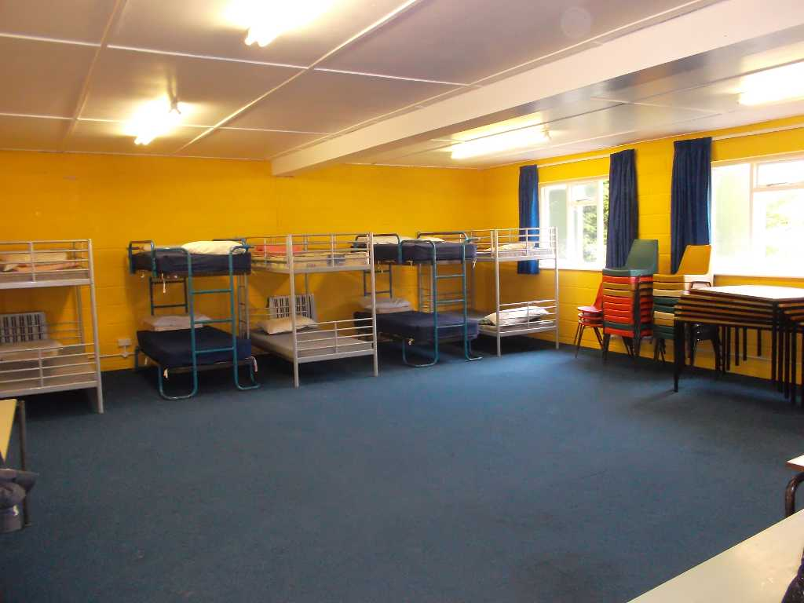

Scouting offers fun, challenge and everyday adventure to 400,000 girls and boys across the UK. Offering over 200 different activities from abseiling and archery to drama, street sports and water zorbing, Scouting helps 6-25 year olds grow in confidence, achieve their full potential and become active members of their communities.


Beavers
Beaver Scouts are the youngest section of the Scouting family, who are usually aged between six and eight years old, though they can be as young as five and three quarters.
Their activities are based around making things, outdoor activities, singing, playing games, going out on visits, investigating nature, listening to stories, learning how to be safe and most importantly, making new friends.
| Colony | Location | Contact |
|---|---|---|
| 1st St Marylebone | St Pauls Church Centre, 5 Rossmore Road, NW1 6NJ | |
| 3rd Paddington | St Luke's Church Centre, Ashmore Road, W9 3EH | |
| 4th City of Westminster | St Vincent de Paul Primary School, Morpeth Terrace, SW1P 1EP | |
| 6th St Marylebone | Gateway Primary School, Lisson Grove, NW8 8LN | |
| 8th St Marylebone | Mansergh - Woodhall Club, 24-28 Hill Road, NW8 9QG | |
| 11th St Marylebone | Mansergh - Woodhall Club, 24-28 Hill Road, NW8 9QG |
Cubs
Cub Scouts are young people aged between 8 and 10½, who make up the second section of the Scouting family, between Beavers and Scouts.
Cubs take part in a wide range of activities that are designed to be interesting and to challenge them. At the same time they have fun, adventure and make friends along the way. They do this through taking part in a programme of activities provided by the Leadership team such as: camping, playing games, trying new things and exploring the outdoors.
| Pack | Location | Contact |
|---|---|---|
| 1st St Marylebone | St Mary's School, Enford Street, W1H 1DL | |
| 3rd Paddington | St Luke's Church Centre, Ashmore Road, W9 3EH | |
| 4th City of Westminster | St Vincent de Paul Primary School, Morpeth Terrace, SW1P 1EP | |
| 5th Paddington | St Mary Magdalenes School, Warwick Estate, W2 5TF | |
| 6th St Marylebone | Gateway Primary School, Lisson Grove, NW8 8LN | |
| 8th St Marylebone | Mansergh - Woodhall Club, 24-28 Hill Road, NW8 9QG | |
| 11th St Marylebone | Mansergh - Woodhall Club, 24-28 Hill Road, NW8 9QG |
Scouts
The Scout Section is for young people, usually aged between 10½ and 14 years. A young person can come into the Troop at 10 and may stay until they are 14½ years old. The Scout Troop is the third section in the Scout Group, above Beavers and Cubs.
Scouts are the third section of the Scouting movement. From the first experimental camp for 20 boys in 1907, the movement now has an estimated 28 million members worldwide, and in the UK alone there are over 499,000 boys and girls involved in Scouting. An increase in adult volunteers means that more and more young people are now able to take part in their own big adventure.
| Troop | Location | Contact |
|---|---|---|
| 1st St Marylebone | St Mary's School, Enford Street, W1H 1DL | |
| 3rd Paddington | St Luke's Church Centre, Ashmore Road, W9 3EH | |
| 4th City of Westminster | St Vincent de Paul Primary School, Morpeth Terrace, SW1P 1EP | |
| 5th Paddington | St Mary Magdalenes School, Warwick Estate, W2 5TF | |
| 8th St Marylebone | Mansergh - Woodhall Club, 24-28 Hill Road, NW8 9QG | |
| 11th St Marylebone | Mansergh - Woodhall Club, 24-28 Hill Road, NW8 9QG |
Explorers
Explorer Scouts are young people, usually aged between 14 and 18 years old. They make up the fourth section of the Scouting family after Beavers, Cubs and Scouts.
Explorers are the fourth section of the Scouting movement. Right from the time of Baden-Powell, there have been arrangements for young people who wanted to continue after their time in the Scout Section, and in 1967, Venture Scouts were formed from the existing Senior Scout and Rover Scout Sections.
| Unit | Location | Contact |
|---|---|---|
| InTents | Mansergh - Woodhall Club, 24-28 Hill Road, NW8 9QG | |
| 11th St Marlybone | Mansergh - Woodhall Club, 24-28 Hill Road, NW8 9QG |
Campsite
Our Coombe Farm Campsite is located just outside Central London at Addington on the A212; it stands on 2.5 Acres, ideal for weekend training camps or as a base for exploring and provides easy access to central London and the South Coast.
- 
-

Coombe Farm offers indoor accommodation for 20 Cubs or Scouts along with a toilet and shower block. If, however, you wish to hold a Troop or Patrol camp then there are plenty of camping areas available. The Farm also provides the perfect place to hold your Patrol Camps as it is great for wide games, fire-lighting, backwoods cooking, etc. If you are interested in either booking Coombe Farm or finding out more details then please contact the Booking Secretary, or by phone on 020 8830 5223 or 07816 453 221.